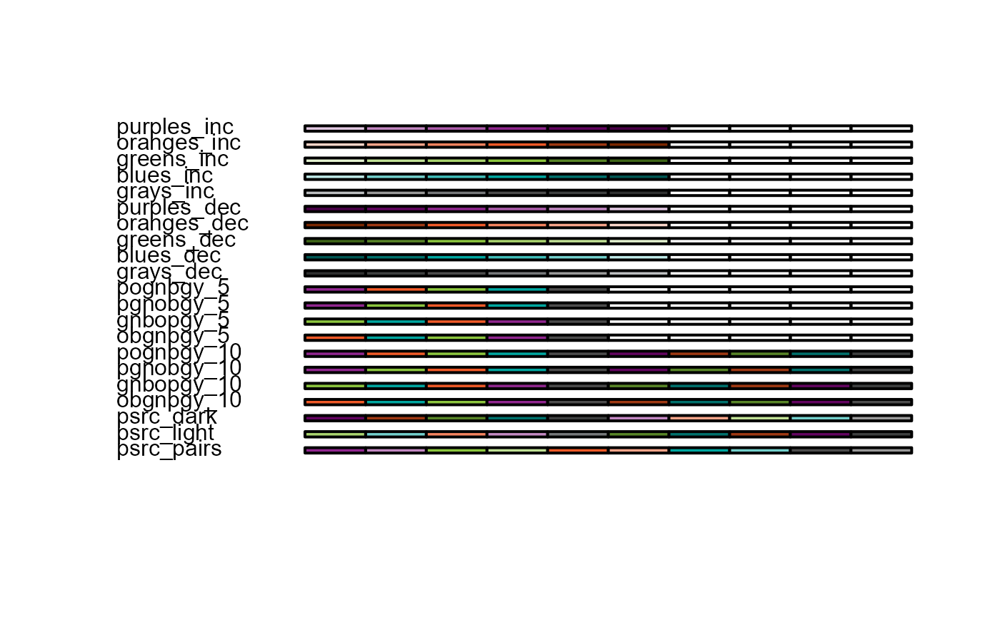

Intro: plot types and basic parameters
psrcplot-intro-1.RmdWhy psrcplot?
Data visualizations can be deceptively complex to get ‘just right’. The psrcplot library provides a convenient way to create charts with standard PSRC styles, fonts and formatting–without having to specify each of those settings yourself. It uses features and styles through the ggplot2 package, with optional interactive capabilities via the plotly package. The package will also expand and evolve to keep pace with PSRC graphic design standards.
Visualization menu
Currently, the plot types you can create with psrcplot commands include:
- Bar
- Column
- Faceted Column (i.e. multiple charts in a matrix with matching scales)
- Line
- Bubble
- Treemap
These exist as static plots in ggplot format and can be edited using ggplot2 commands.
Additionally, the bar, column and line plot functions each have an interactive version that adds features such as tooltips or hovertext (appearing with cursor movement) and exist as plotly objects, which can be edited using plotly commands.
You can find out more about any of the functions by typing ?function_name in the console, e.g.
?static_bar_chart()
Basic parameters
Although each chart type has some nuances, key elements can be generalized across plot types (as those familiar with ggplot2 will know). The function argument names approximate those in ggplot2. The required arguments are:
- The dataframe/tibble, t
- A discrete variable to separate distinct categories: either y (bar plots), x (column plots), or s (either bubble or treemap plots)
- A numeric variable plotted as a quantity: either x (bar plots), y (column plots) or for line plots, both x and y.
- fill, which corresponds to the plotted shape: in the case of bubbles or treemap sections, it is numeric and represents size. In bar or column plots, it is a discrete variable; if multiple categories exist they will be listed in the legend. can either be stacked or “dodged” (shown adjacent one another in a group).
There are also several standard but optional arguments:
- title and subtitle text, by default located to the top right of the plot
- source citation text to appear in smaller font below the plot
- est can be specified to adjust the display of the numeric variable listed above (e.g. “currency” will display dollar signs, versus “percent” or “number”); dec controls decimal places displayed on the label.
- The color argument determines which palette is
applied to the fill variable. You can view the standard PSRC
alternatives with the function
print_psrc_palette().

Further optional arguments exist specific to plot type–for example, line width for line plots, or custom axes labels for bar/column plots.